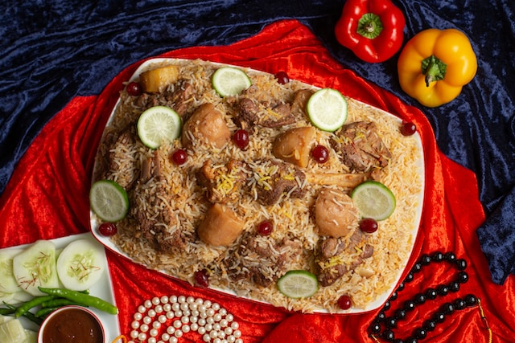

Welcome to recipe tutorials

Ingredients:
- → 1 cup boiled basmati rice
- → 1/2 teaspoon mint leaves
- → salt as required
- → 2 tablespoon refined oil
- → 3 green cardamom ,2 clove, 2 onions, 1 teaspoon trumeric
- → 1 tablespoon garlic paste
1 cup hung curd
- → 2 tablespoon coriander leaves
water as required
- → 1 tablespoon ghee
- → 600 gm chicken
1 tablespoon garam masala powder
- → 1 teaspoon saffron
1 tablespoon bay leaf
1 black cardamom
- → 1 teaspoon cumin seeds
4 green chillies
1 tablespoon ginger paste
- → 1 teaspoon red chilli powder
- → 1/2 tablespoon ginger
- → 2 drops kewra
- → 1 tablespoon rose water
Procedures:
- 1 Prepare saffron-kewra water and chop veggies:To make a delightful
chicken biryani dish, firstly soak saffron in water to prepare saffron water (one tsp saffron
can be soaked in 1/4 cup water). Next, mix kewra drops in water and mix well to make kewra
water. Set them aside for later usage. Now, chop the onion and coriander leaves and keep them
aside.
- 2Saute the onions:Meanwhile, heat refined oil in a deep bottomed pan.
Once the oil is hot enough, add cumin seeds, bay leaf, green cardamom, black cardamom, cloves in
it, and saute for about a minute. Then, add chopped onion to it and saute until pink. Now, add
chicken into it with slit green chillies, turmeric, salt to taste, ginger-garlic paste, red
chilli powder and green chilli paste. Mix well all the spices and cook for 2-3 minutes. Then,
add hung curd into it and give a mix. (Make sure the chicken is washed properly and patted dry
before adding it to the dish)
- 3Cook biryani on low heat for 5-6 minutes:Turn the flame to medium
again and add garam masala in it along with ginger julienned, coriander and mint leaves. Add
kewra water, rose water and 1 tsp saffron water in it. Cook till the chicken is tender. Then add
1 cup cooked rice and spread evenly. Then add the remaining saffron water and pour ghee over it.
You can now cook the dish without the lid or cover it with a lid to give a dum-effect due to the
steam formation.
- 4Serve hot chicken biryani with your favourite chutney or raita:Cook
for 15-20 minutes with a closed lid and garnish with 1 tbsp fried onions and coriander leaves.
Serve hot chicken biryani with raita of your choice. Enjoy!
Check Other recipes

Burger